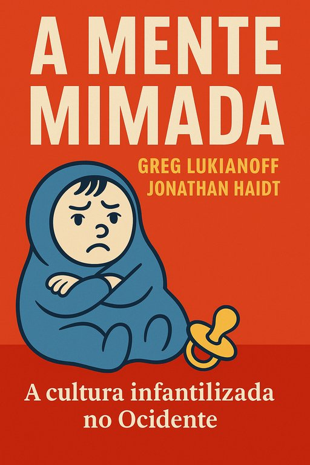

Publicado em 2025-06-20 21:57:18
SubtÃtulo:
Entre zonas de conforto, trigger warnings e cancelamentos, o pensamento crÃtico está a ser trocado por fragilidade emocional e dogmatismo identitário. Aonde nos leva esta cultura da superproteção?
Excerto para destaque:
“O que não nos mata... ofende-nos.”
Esta parece ser a máxima de uma geração cada vez mais mimada pelas instituições e cada vez menos preparada para o confronto com a realidade. O livro A Mente Mimada é um alerta urgente contra este colapso silencioso da cultura democrática.
Publicado em 2018, The Coddling of the American Mind — traduzido em Portugal como A Mente Mimada: Como a Boa Intenção e a Má Educação Estão a Preparar uma Geração para o Fracasso — tornou-se leitura obrigatória para quem se interroga sobre o estado da liberdade de expressão, da educação e da cultura contemporânea.
Assinado por Greg Lukianoff e Jonathan Haidt, o livro disseca os efeitos nefastos de uma pedagogia emocional que confunde empatia com fragilidade, e proteção com censura. É a crónica do nascimento de uma geração que teme ideias, rejeita o confronto e exige filtros emocionais sobre a realidade.
Os autores identificam três falsas crenças que se tornaram virais:
Estas ideias instalaram-se nas escolas, universidades e empresas como verdades absolutas — quando, na realidade, são sementes de censura, intolerância e regressão intelectual.
As universidades, outrora palcos de livre pensamento, transformaram-se em zonas seguras, onde ideias “perigosas†são proibidas e o desconforto é tratado como trauma. O medo de ofender ultrapassa a necessidade de pensar. Os “trigger warnings†substituem a coragem. As redes sociais amplificam essa tendência, criando tribos ideológicas à prova de nuance.
Se julgas que esta epidemia cultural é apenas americana, desengana-te.
Já por cá se ouvem os mesmos clamores:
A cultura da infantilização já chegou à s nossas escolas, à s universidades e à polÃtica. Questionar tornou-se perigoso. O pensamento divergente é rotulado. A dúvida é punida.
Precisamos de voltar a ensinar a pensar, a resistir, a dialogar.
Precisamos de resiliência, não de almofadas emocionais.
Precisamos de um novo humanismo, não de puritanismo digital.
Como bem dizia Allan Bloom no já esquecido The Closing of the American Mind (1987), também ele amputado na tradução portuguesa como A Cultura Inculta, o abandono do cânone e da razão crÃtica em nome de ideologias leva ao colapso do espÃrito.
A mente mimada é o fim da liberdade — porque quem não aguenta ideias, acabará por aceitar censuras.
📠Documento recomendado:
📥 Manifesto para um Futuro Inteligente – PDF estratégico sobre educação e cultura (anexo)